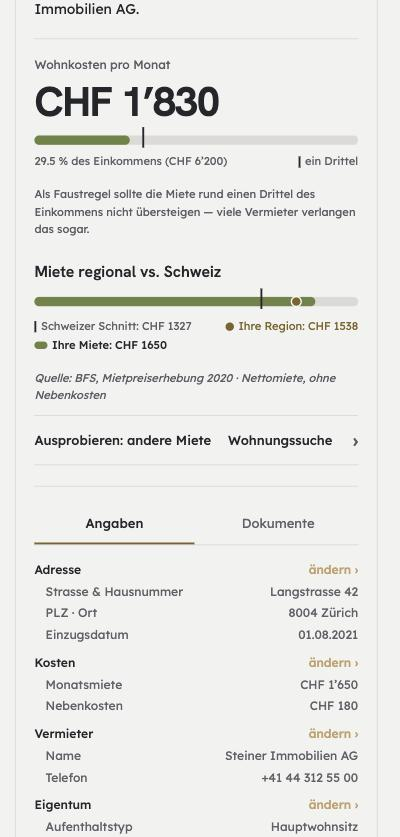
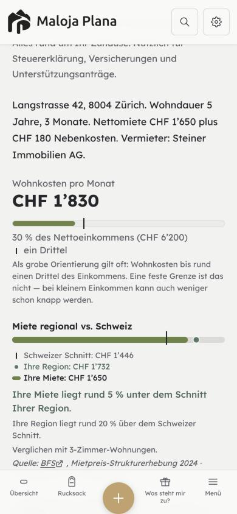
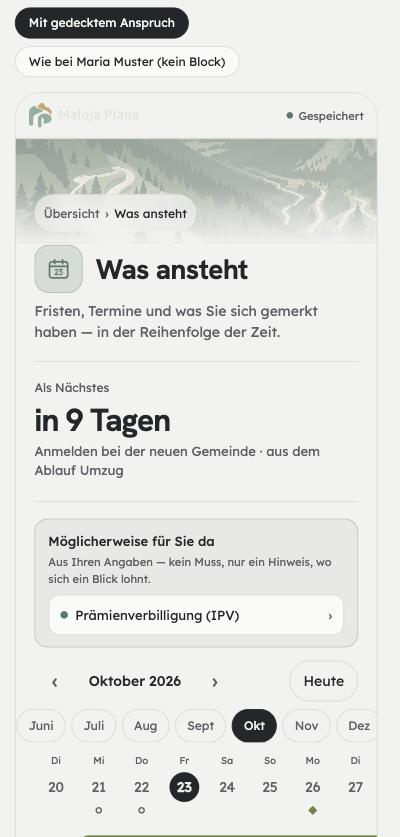
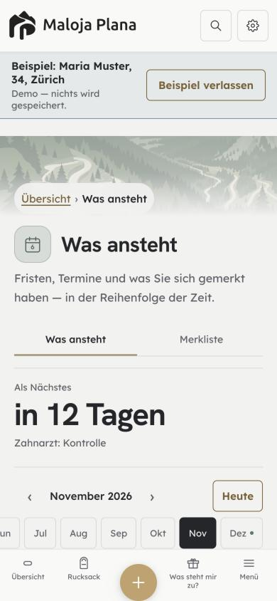

<title>Gesamtbild nach Stardust</title>
<meta name="claude:viewport-fit-sides" content="cover">
<link rel="stylesheet" href="https://fonts.googleapis.com/css2?family=Hanken+Grotesk:wght@600;700&family=Lexend:wght@400;500&display=swap">
<style>
/* Layout: eine ruhige Lesespalte wie ein Maloja-Kapitel; Gegenüberstellungen als Paare, Entscheide als Skizzen A/B/C. Farben aus Maloja constants.js */
:root {
  --bg: #F2F2F0; --surface: #FAFAF8; --up: #E8E7E3; --border: #DCDAD6;
  --text: #24262A; --mid: #5F636A; --sand: #C4A06A; --onSand: #2A2620; --sandDeep: #7A5F30;
  --sage: #5A7868; --sky: #4A6A88; --rose: #9A4A4A;
  --display: "Hanken Grotesk", "Helvetica Neue", Arial, sans-serif;
  --body: "Lexend", "Helvetica Neue", Arial, sans-serif;
}
@media (prefers-color-scheme: dark) { :root:not([data-theme="light"]) {
  --bg: #22211F; --surface: #2B2A26; --up: #343330; --border: #423F39;
  --text: #E6E3DC; --mid: #A4A8AE; --sand: #C4A06A; --onSand: #2A2620; --sandDeep: #D8B985;
  --sage: #7E9F8C; --sky: #86A6C2; --rose: #D98A8A; color-scheme: dark } }
:root[data-theme="dark"] {
  --bg: #22211F; --surface: #2B2A26; --up: #343330; --border: #423F39;
  --text: #E6E3DC; --mid: #A4A8AE; --sand: #C4A06A; --onSand: #2A2620; --sandDeep: #D8B985;
  --sage: #7E9F8C; --sky: #86A6C2; --rose: #D98A8A; color-scheme: dark }
body { background: var(--bg); color: var(--text); font-family: var(--body); font-size: 16px; line-height: 1.55;
  padding-left: max(16px, env(safe-area-inset-left, 0px)); padding-right: max(16px, env(safe-area-inset-right, 0px)); padding-block: 32px 64px; }
main { max-width: 960px; margin: 0 auto; display: flex; flex-direction: column; gap: 48px; }
h1, h2, h3 { font-family: var(--display); font-weight: 700; text-wrap: balance; margin: 0; letter-spacing: -0.015em; }
h1 { font-size: 36px; line-height: 1.1; }
h2 { font-size: 28px; line-height: 1.15; }
h3 { font-size: 19px; }
p { margin: 0; max-width: 65ch; }
.etikett { font-size: 13px; color: var(--mid); }
.satz { color: var(--mid); }
section { display: flex; flex-direction: column; gap: 16px; }
.paar { display: grid; grid-template-columns: repeat(auto-fit, minmax(260px, 1fr)); gap: 24px; }
figure { margin: 0; display: flex; flex-direction: column; gap: 8px; min-width: 0; }
figure img { border: 1px solid var(--border); border-radius: 16px; width: 100%; max-width: 360px; height: auto; }
figcaption { font-size: 14px; color: var(--mid); }
figcaption b { color: var(--text); font-weight: 500; }
.tabelle { overflow-x: auto; }
table { border-collapse: collapse; width: 100%; font-size: 14px; min-width: 560px; }
th, td { text-align: left; padding: 8px 12px 8px 0; border-bottom: 1px solid var(--border); vertical-align: top; }
th { font-weight: 500; color: var(--mid); }
td.zahl { font-variant-numeric: tabular-nums; }
.marke { display: inline-block; font-size: 12px; padding: 2px 8px; border-radius: 9999px; background: var(--up); color: var(--text); white-space: nowrap; }
.marke.ok { color: var(--sage); } .marke.offen { color: var(--sandDeep); } .marke.widerspruch { color: var(--rose); }
.stand { display: grid; grid-template-columns: repeat(auto-fit, minmax(200px, 1fr)); gap: 16px; }
.stand div { background: var(--surface); border: 1px solid var(--border); border-radius: 16px; padding: 16px; display: flex; flex-direction: column; gap: 4px; }
.stand .wert { font-family: var(--display); font-weight: 700; font-size: 28px; font-variant-numeric: tabular-nums; }
ol.reihe { margin: 0; padding-left: 24px; display: flex; flex-direction: column; gap: 8px; max-width: 70ch; }
ol.reihe li::marker { color: var(--mid); font-variant-numeric: tabular-nums; }
code { font-size: 0.9em; background: var(--up); padding: 1px 4px; border-radius: 4px; }

/* Entscheide */
.entscheid { background: var(--surface); border: 1px solid var(--border); border-radius: 24px; padding: 24px; display: flex; flex-direction: column; gap: 16px; }
.wahl { display: grid; grid-template-columns: repeat(auto-fit, minmax(220px, 1fr)); gap: 16px; }
.skizze { border: 1px solid var(--border); border-radius: 16px; padding: 16px; display: flex; flex-direction: column; gap: 12px; background: var(--bg); min-width: 0; }
.skizze.empfohlen { border: 2px solid var(--sage); }
.skizze .kopf { display: flex; align-items: baseline; gap: 8px; }
.skizze .buchstabe { font-family: var(--display); font-weight: 700; font-size: 24px; }
.skizze .empf { font-size: 12px; color: var(--sage); font-weight: 500; }
.mini { background: var(--surface); border: 1px solid var(--border); border-radius: 16px; padding: 12px; display: flex; flex-direction: column; gap: 8px; }
.k { font-family: var(--body); font-size: 13px; min-height: 36px; padding: 0 12px; display: inline-flex; align-items: center; justify-content: center; border: 1px solid var(--border); background: transparent; color: var(--text); }
.k.gold { background: var(--sand); color: var(--onSand); border-color: var(--sand); }
.k.rand-gold { border-color: var(--sandDeep); color: var(--sandDeep); }
.k.gewaehlt { background: var(--text); color: var(--bg); border-color: var(--text); }
.r6 { border-radius: 6px; } .r10 { border-radius: 10px; } .rp { border-radius: 9999px; }
.zeile { display: flex; gap: 8px; flex-wrap: wrap; align-items: center; }
.zeile .monat { font-weight: 500; font-size: 14px; flex: 1; }
.feld { border: 1px solid var(--border); border-radius: 10px; min-height: 32px; font-size: 12px; color: var(--mid); display: flex; align-items: center; padding: 0 8px; }
.empfehlung { border-left: 3px solid var(--sage); padding-left: 12px; }
footer { font-size: 13px; color: var(--mid); }
</style>

<main>
  <header style="display:flex;flex-direction:column;gap:12px">
    <p class="etikett">Maloja Plana · Stand 06.11.2026 · gemessen, nichts gebaut</p>
    <h1>Gesamtbild nach Stardust</h1>
    <p class="satz">Wo die App gegenüber den Entwürfen Fassung 5 steht, was offen ist, und wie wir besser werden als die Entwürfe. Langfassung im Repo: <code>docs/design/gesamtbild-2026-11/GESAMTBILD.md</code>.</p>
  </header>

  <section>
    <h2>Stand in vier Zahlen</h2>
    <div class="stand">
      <div><span class="etikett">live (malojaplana.ch)</span><span class="wert">4f37d580</span><span class="satz">0.1.49-beta, 05.11. 11:48</span></div>
      <div><span class="etikett">main, ca. 18:00</span><span class="wert">13c26597</span><span class="satz">#701 gemergt 17:57</span></div>
      <div><span class="etikett">noch nicht live</span><span class="wert">203</span><span class="satz">Commits zwischen live und main</span></div>
      <div><span class="etikett">offene Entwurfs-PRs</span><span class="wert">11</span><span class="satz">4 sauber und grün, #703 nach CI</span></div>
    </div>
  </section>

  <section>
    <h2>Inhaltlich ist die App weiter</h2>
    <p class="satz">Kapitel Wohnen, hell, 390 px. Gleiche Seite, gleiche Maria. Die App rechnet mit den BFS-Mieten 2024 statt 2020, zeigt Tausender-Zeichen und hat den unbelegten Satz über Vermieter gestrichen.</p>
    <div class="paar">
      <figure><figcaption><b>Entwurf Z</b> · Region CHF 1538, Quelle 2020, «viele Vermieter verlangen das sogar»</figcaption></figure>
      <figure><figcaption><b>App heute</b> · Region CHF 1’732, BFS 2024 verlinkt, Faustregel ohne Behauptung</figcaption></figure>
    </div>
  </section>

  <section>
    <h2>An der Oberfläche ist das Mockup ruhiger</h2>
    <p class="satz">«Was ansteht», hell, 390 px. Im Entwurf ist bis zum Formular nichts gold. In der App ist der Öffner «+ Erinnerung hinzufügen» der gefüllte Hauptknopf und «Heute» ist gold umrandet.</p>
    <div class="paar">
      <figure><figcaption><b>Entwurf G</b> · «Heute» und «+ Erinnerung» grau umrandet, Pillen (999 px)</figcaption></figure>
      <figure><figcaption><b>App heute</b> · «Heute» gold umrandet, Knöpfe 6 px, Monate 10 px</figcaption></figure>
    </div>
    <div class="tabelle">
      <table>
        <thead><tr><th>Merkmal</th><th>Entwurf Fassung 5</th><th>App (main 7e9bf444)</th><th>Stand</th></tr></thead>
        <tbody>
          <tr><td>Titelschrift</td><td>Hanken Grotesk 700, 30 px</td><td>Hanken Grotesk 700, 30 px</td><td><span class="marke ok">gleich</span></td></tr>
          <tr><td>Ersatzschrift</td><td>keine (fällt ohne Schriftdatei auf Serif)</td><td><code>sans-serif</code></td><td><span class="marke ok">App richtig</span></td></tr>
          <tr><td>Knöpfe mit Text</td><td class="zahl">999 px (Pille)</td><td class="zahl">6 px</td><td><span class="marke widerspruch">6 oder 10? E1</span></td></tr>
          <tr><td>Karten</td><td class="zahl">18 px · Übersicht 22 px</td><td class="zahl">6 / 10 / 16 px gemischt</td><td><span class="marke offen">#729</span></td></tr>
          <tr><td>Gold auf «Was ansteht»</td><td>nur Speichern im Formular</td><td>Öffner gefüllt, «Heute» umrandet</td><td><span class="marke offen">E2</span></td></tr>
          <tr><td>Breite Ansicht</td><td>nicht gezeichnet</td><td>eigene Spalte</td><td><span class="marke ok">App weiter</span></td></tr>
        </tbody>
      </table>
    </div>
  </section>

  <section>
    <h2>Vier Entscheide als Nächstes</h2>

    <div class="entscheid">
      <h3>E1 · Wie rund sind Knöpfe?</h3>
      <p class="satz">Auf main gilt seit 05.11. «alle Knöpfe 6 px» mit Test. Der neuere Vorschlag B vom 06.11. (#729) setzt Knöpfe auf 10 px. Beides kann nicht gelten.</p>
      <div class="wahl">
        <div class="skizze"><div class="kopf"><span class="buchstabe">A</span><span class="etikett">6 px, heute</span></div>
          <div class="mini"><div class="feld">Titel</div><div class="zeile"><span class="k r6">Abbrechen</span><span class="k r6 gold">Speichern</span></div></div></div>
        <div class="skizze empfohlen"><div class="kopf"><span class="buchstabe">B</span><span class="empf">Empfehlung</span><span class="etikett">10 px</span></div>
          <div class="mini"><div class="feld">Titel</div><div class="zeile"><span class="k r10">Abbrechen</span><span class="k r10 gold">Speichern</span></div></div></div>
        <div class="skizze"><div class="kopf"><span class="buchstabe">C</span><span class="etikett">Pille, Entwurf</span></div>
          <div class="mini"><div class="feld">Titel</div><div class="zeile"><span class="k rp">Abbrechen</span><span class="k rp gold">Speichern</span></div></div></div>
      </div>
      <p class="empfehlung">B: der neuere Entscheid, und er folgt «Ecke nach Grösse»: Marke 6, Knopf und Feld 10, Karte 16, Blatt 24. Beim Neubau von #729 die Zeile im Brand Book und <code>KNOPF_RADIUS</code> mitändern.</p>
    </div>

    <div class="entscheid">
      <h3>E2 · Wann ist etwas gold?</h3>
      <p class="satz">Kopf von «Was ansteht». Farbrolle seit 05.11.: Gold heisst handeln.</p>
      <div class="wahl">
        <div class="skizze"><div class="kopf"><span class="buchstabe">A</span><span class="etikett">heute</span></div>
          <div class="mini"><div class="zeile"><span class="monat">‹ November 2026 ›</span><span class="k r10 rand-gold">Heute</span></div><span class="k r10 gold">+ Erinnerung hinzufügen</span></div></div>
        <div class="skizze"><div class="kopf"><span class="buchstabe">B</span><span class="etikett">Entwurf</span></div>
          <div class="mini"><div class="zeile"><span class="monat">‹ November 2026 ›</span><span class="k rp">Heute</span></div><span class="k rp">+ Erinnerung hinzufügen</span></div></div>
        <div class="skizze empfohlen"><div class="kopf"><span class="buchstabe">C</span><span class="empf">Empfehlung</span><span class="etikett">Gold beim Festhalten</span></div>
          <div class="mini"><div class="zeile"><span class="monat">‹ November 2026 ›</span><span class="k r10 gewaehlt">Heute</span></div><span class="k r10">+ Erinnerung hinzufügen</span><div class="feld">Titel · Datum</div><span class="k r10 gold">Erinnerung speichern</span></div></div>
      </div>
      <p class="empfehlung">C: «Heute» springt nur im Monat, also eine Auswahl. Der Öffner bleibt ruhig. Gold trägt nur der Knopf, der wirklich speichert. So ist auf der Seite höchstens ein goldener Fleck.</p>
    </div>

    <div class="entscheid">
      <h3>E3 · Reihenfolge zum Mergen freigeben</h3>
      <ol class="reihe">
        <li><b>#730</b> Fedlex-Zitate · <b>#728</b> Entscheide (sauber, grün)</li>
        <li><b>#703 → #710 → #712</b> Sprache und Querverweise, je auf main umstellen</li>
        <li><b>#726</b> Bewegung, vorher einmal im Browser ansehen</li>
        <li><b>#722 → #731</b> Kalenderblatt: #722 auf main umstellen, ein Konflikt in <code>AblaufSchale.jsx</code></li>
        <li><b>#693</b> Erklärseite Politsystem</li>
        <li><b>#729</b> neu erzeugen, mit E1 und Vorher-nachher-Bildern, dann mergen</li>
        <li>Danach Deploy, damit die 203 Commits nicht weiter wachsen</li>
      </ol>
      <p class="empfehlung">So mergen. Mergen und Deployen bleiben deine Hand.</p>
    </div>

    <div class="entscheid">
      <h3>E4 · #726 jetzt, #729 neu?</h3>
      <p class="satz">#729 enthält #726 mit anderen Hashes und hat 67 Konfliktdateien gegen main. Beide zu mergen gibt neue Konflikte.</p>
      <div class="wahl">
        <div class="skizze"><div class="kopf"><span class="buchstabe">A</span><span class="etikett">beide warten</span></div><p class="satz">Bewegung bleibt liegen, bis Ecken und Luft fertig sind.</p></div>
        <div class="skizze"><div class="kopf"><span class="buchstabe">B</span><span class="etikett">nur #729</span></div><p class="satz">#726 schliessen, alles in einem grossen Schritt.</p></div>
        <div class="skizze empfohlen"><div class="kopf"><span class="buchstabe">C</span><span class="empf">Empfehlung</span></div><p class="satz">#726 jetzt mergen (sauber, grün). #729 danach auf frischem main mit den Skripten neu erzeugen.</p></div>
      </div>
    </div>
  </section>

  <section>
    <h2>Besser als der Entwurf</h2>
    <ol class="reihe">
      <li><b>Regeln statt Pixel.</b> Brand Book §7a: Nähe, Skala ×1.5, Ecke nach Grösse, verschachtelte Ecken, Bewegung nach Weg, Takt 24. Damit passen auch die Ansichten, die nie gezeichnet wurden (32 Entwürfe, 74 Ansichten in <code>main.jsx</code>).</li>
      <li><b>Ein Gold je Bildschirm, als Test.</b> Heute stehen im Kapitel 6 bis 8 goldene Elemente auf einem Bildschirm.</li>
      <li><b>Fristen mit eigenem Zeichen.</b> Kalenderblatt blau, rot erst bei «abgelaufen», mit Frucht-Stempel (#722, #731).</li>
      <li><b>Breit gestalten.</b> Der Entwurf kennt nur das Telefon. Später zwei Spalten im Kapitel: Instrument links, Angaben rechts.</li>
      <li><b>Ehrliche Schrift.</b> Ersatzschrift immer <code>sans-serif</code>, Gewicht 400 nur, wo es geladen ist. «Was ist jetzt dran?» verlangt heute Hanken 400, geladen sind nur 600 und 700.</li>
    </ol>
  </section>

  <footer>Gemessen am 06.11.2026 im Beispiel «Maria Muster» mit <code>getComputedStyle</code>, Entwürfe über einen lokalen Server. PR-Stand aus <code>gh</code> und <code>git</code>, Momentaufnahme gegen 18:00. Nicht gezeichnet bewertet: Entwürfe B–F, H–X einzeln.</footer>
</main>
